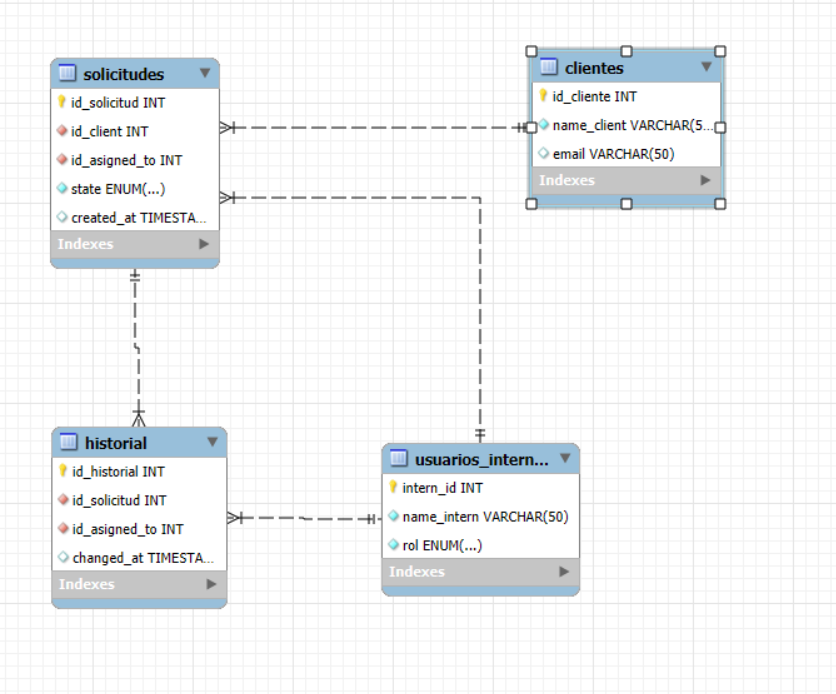

Perfil profesional
Ingeniero mecatrónico de la Universidad Nacional de Colombia. Con experiencia en automatización de procesos de manufactura, análisis de datos junto a procesos ETL, y evaluación de KPI’s. Control y simulaciones en MatLab y robostudio, programación (Python, java, C) y desarrollo de proyectos interdisciplinarios. Con Capacidad de trabajo en equipo, proyectos interdisciplinarios, liderazgo y comunicación asertiva.
Entre mis habilidades destaco las siguientes:
- Inventor, AutoCAD, Fusion 360
- RobotStudio, ROS, Ladder,Studio5000
- Power BI, MySQL, DAX, Azure,IBM Cloud
- Python, C, Java, Assembler
- Integración IoT, KPIs,simulaciones
- Trabajo en equipo
- Proactividad
- Pensamiento lógico
Hablo los siugientes idiomas:
- Español (Nativo)
- Inglés (B2)
- Alemán (A2)
Proyecto aplicado a ingeniería
El proyecto consistió en el Desarrollo y creación de un prototipo de pierna Cheetah; simulación del comportamiento de la pierna utilizando MatLab/Simulink para finalmente crear y ensamblar un prototipo.
- Python
- Java
- C y Assembler
- HTML para paginas web

Explicación del proyecto
El proyecto consistió en trabajar en todas las etapas de la elaboración de un proyecto. Empezando por la creación de un contrato social, la definición del problema, la elaboración de los objetivos y una metodología además de la elaboración de cálculos, sus memorias y demás pruebas físicas e investigación requerida.
Para finalmente llegar a la etapa de diseño iterativo, producción, pruebas y ensamble del prototipo de la pierna. Con una evaluación final del proyecto por parte del cliente.
El el siguiente enlace se encuentra el desarrllo en detalle del proyecto: Github Cheetah
Automatización de procesos
El proyecto consistió en generar una propuesta de automatización para una línea de producción de cerámica (Pasando por su cocción, su diseño y su empacado). Además, se decidió en crear una empresa que participara dentro de una "licitación" para la propuesta de automatización.
Esta empresa se le dió el nombre de "Chia Dinamics" un empresa de ingeniería.
Etapas del proyecto
- Uso de metodología, creación de presupuesto, cronograma.
- Análisis y diagramas VSM pre y post automatización en el proceso.
- Estudio de viabilidad económica del proyecto (taza de retorno).
- Diseño de HMI y gemelo digital
- Análisis de riesgos
- Diseño de una celda robótica para el proceso de empacado


La evaluación de viabilidad económica de proyecto incluye los ingresos y egresos de cada mes del proyecto (incluyendo salarios de ingenieros) y los costos de cada elemento que se usará.
Eldetalle del proyecto se encuentra en el siguiente GitHub Github Automatización
Como se muestra en el VMS post-automatización. Se optimizaron 3 pasos de proceso: La impresión de patrones, la verificación de la calidad de las baldosas y el proceso de empacado.
La impresión y la calidad del producto se propusieron automatizar con una impresora de patrones y un Qualitron (máquina que verifica la composición de las baldosas). Por otro lado, el embalaje se diseñó de la siguiente manera:
Análisis de Datos
Dashboards
La ventaja del estudio de ingeniería es la transversalidad de la carreras y como un ingeniero puede desenvolverse en distintos campos del conocimiento, por lo tanto, presento a continuación los proyectos relacionados a finanzas y análisis de datos que realicé.
Portafolio de inversión
Portafolio de inversión tomando como referencia el S&P500. La idea de este portafolio es amortiguar la inversión en caso de que algunas acciones bajen. También se incluyen diferentes indicadores para más información.
Robótica
Los proyectos los dividí entre robótica industrial y robótica móvil, simplemente por su aplicación, ya que el principio es el mismo.
Robótica industrial
Robótica móvil
Internet of the Things
Es de suma importancia estar a la vanguardia de que necesita el mercado. A continuación, mis proyectos en IoT e IA.
Programación
Bases de datos
Creación de una base de datos con 4 tablas, solicitudes, clientes historial y el nombre de usuarios internos (referente a los trabajadores de la empresa).

Analisis de imagen y video
Empleando el paquete CV2 y Mediapipe se permite el análisis de imagen y video con Python
Programación de microcontroladores
Estos proyectos se centran entre a comunicación entre software y hardware. Con los lenguajes Assembler y C. Se le enviaron instrucciones a un microcontrolador PIC18 de Microchips. A continuación, se presenta el repositorio con los códigos de distintos proyectos.
Aplicacion de estructuras de datos
Para la correcta comprensión de las distintas estructuras de datos existentes se realizó un calendario para la distribución y organización del horario de clases de estudiantes de la universidad Nacional. Junto a pruebas de fiabilidad de los códigos.